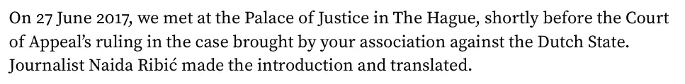

Preuve · Lettre
Giltay à Munira Subašić, 20 mai 2026
Le passage
« Le 27 juin 2017, nous nous sommes rencontrés au Palais de justice de La Haye, peu avant l’arrêt de la Cour d’appel dans l’affaire engagée par votre association contre l’État néerlandais. La journaliste Naida Ribić a fait les présentations et a traduit. » Le premier paragraphe de la lettre. Le livre y était joint. La lettre ne mentionne pas la fleur que Subašić a remise lors de cette rencontre. Traduit de l’anglais ; le texte original figure ci-dessous.
Texte original
“On 27 June 2017, we met at the Palace of Justice in The Hague, shortly before the Court of Appeal’s ruling in the case brought by your association against the Dutch State. Journalist Naida Ribić made the introduction and translated.”

Pourquoi ce document compte
Cette lettre, adressée à la femme qui était présente, consigne par écrit la rencontre en personne sur laquelle repose la citation de la section des voix. La lettre en mentionne la date, le lieu, l’occasion et la journaliste qui a fait les présentations et servi d’interprète, la Bosno-Néerlandaise Naida Ribić. Les paroles elles-mêmes n’y sont pas reprises. La fleur de Srebrenica que Subašić a remise ne figure pas dans la lettre : la citation repose sur le récit que l’auteur fait d’une rencontre qui, pour le reste, est bel et bien documentée. Les paroles citées sont la traduction qu’en a donnée Naida Ribić sur place.
Provenance
- Document
- Lettre, une page
- Expéditeur
- Edwin Giltay, La Haye
- Destinataire
- Mme Munira Subašić, présidente des Mères des enclaves de Srebrenica et Žepa, Sarajevo
- Date
- 20 mai 2026
- Objet
- L’édition anglaise, envoyée neuf ans après la rencontre au Palais de justice
- Annexe
- The Cover-up General, édition anglaise, La Haye 2025
- Présente à la rencontre
- La journaliste Naida Ribić, qui a fait les présentations et servi d’interprète ; les paroles citées dans la section des voix sont sa traduction
- Langue
- Anglais
Cité dans : la section des voix.
Fiche de preuve : https://
Document : https://
Dernière modification le 9 septembre 2026, consulté le 3 octobre 2026.

Cette page est une fiche de preuve du livre Le Général de dissimulation d’Edwin Giltay et du site web qui l’accompagne.